Язык — RU / EN
Переключатель в шапке · мгновенно · запоминается · русские заголовки крупным серифом (Playfair, не тонкие)
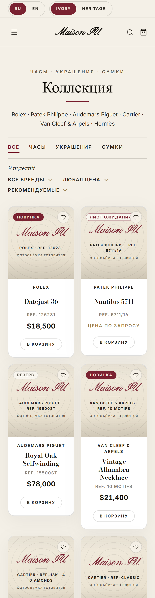
Каталог · РусскийТема Ivory
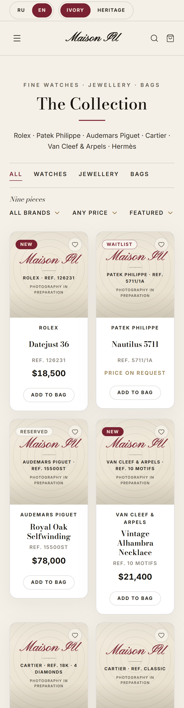
Каталог · EnglishТема Ivory
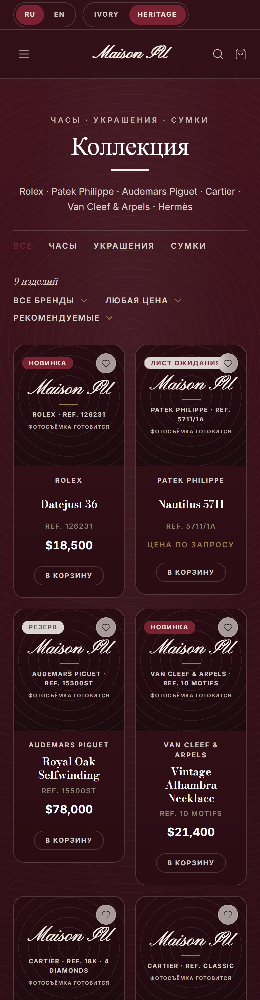
Каталог · РусскийТема Heritage
Каталог
Фирменные плитки на всех товарах · цены Inter · фильтры
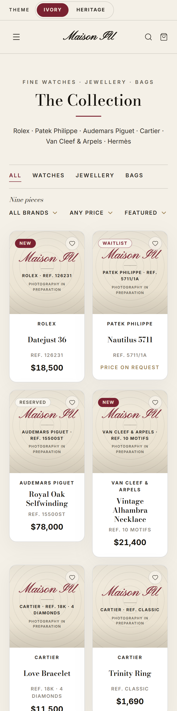
КаталогТема Ivory
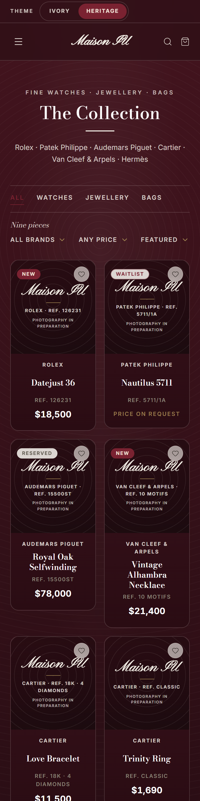
КаталогТема Heritage
Карточка товара
Плитка-герой · отцентровано · кнопки в столбик · спеки и провенанс
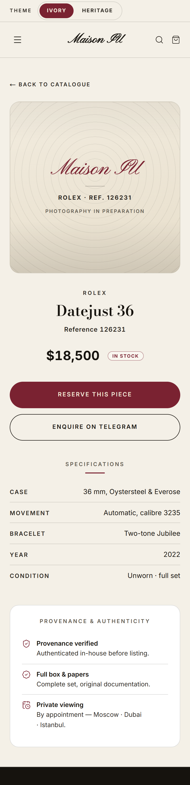
Карточка · RolexТема Ivory
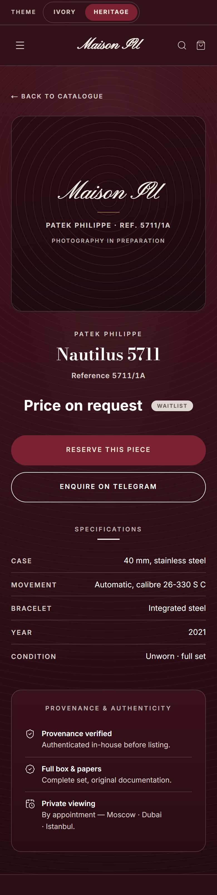
Карточка · PatekТема Heritage
Корзина + Оформление
«Add to bag» → панель корзины → checkout · без онлайн-оплаты, заявка в Telegram/WhatsApp
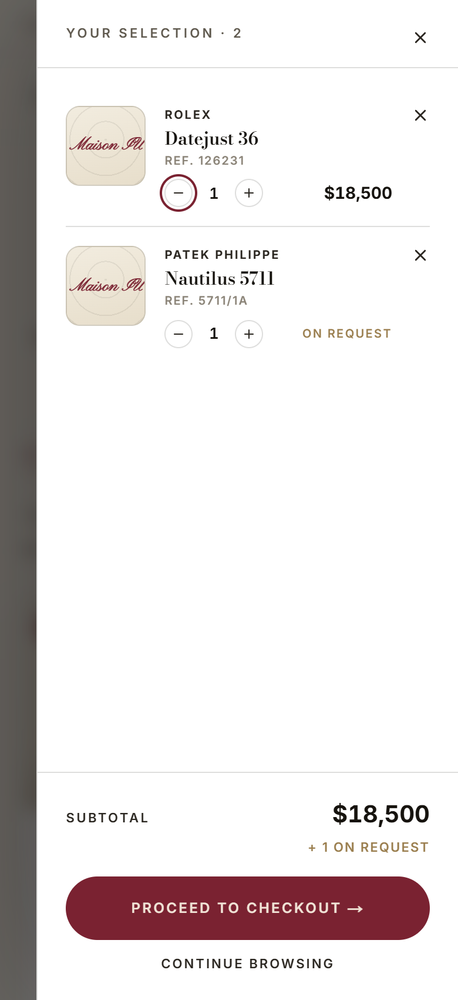
Корзина · панельМини-плитки, подытог, POA отдельно
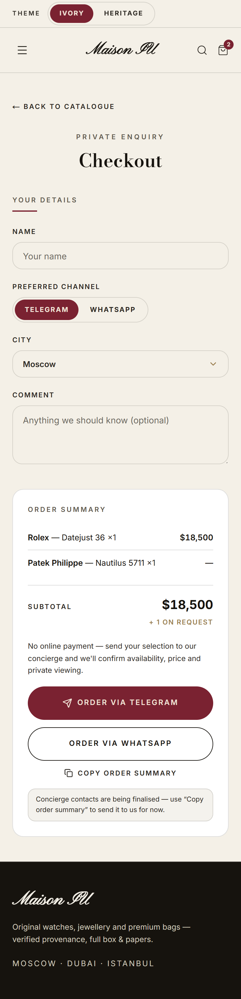
ОформлениеТема Ivory
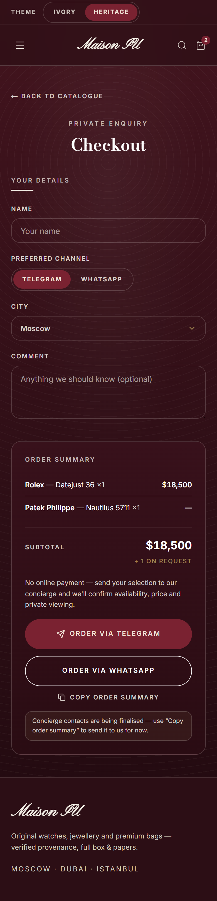
ОформлениеТема Heritage
Что изменилось — фото товаров
Было | Стало · применено на всех товарах, обе темы
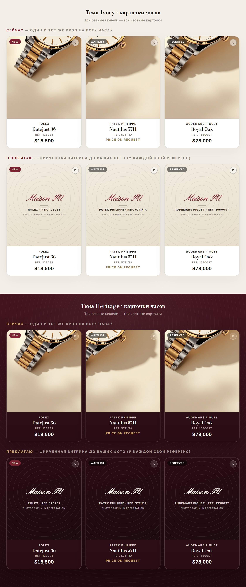
Было На трёх разных часах (Rolex · Patek · AP) стоял один и тот же кроп одних часов, у Nautilus — почти пустой.
Стало (применено) Честная фирменная «витрина»: скрипт Maison IU, у каждого товара свой бренд и референс, «Photography in preparation». Ничего чужого и поддельного, каждая карточка своя. Заменим на реальные фото вашего товара за минуту — это и есть главный рычаг качества, ждём их.
Стало (применено) Честная фирменная «витрина»: скрипт Maison IU, у каждого товара свой бренд и референс, «Photography in preparation». Ничего чужого и поддельного, каждая карточка своя. Заменим на реальные фото вашего товара за минуту — это и есть главный рычаг качества, ждём их.